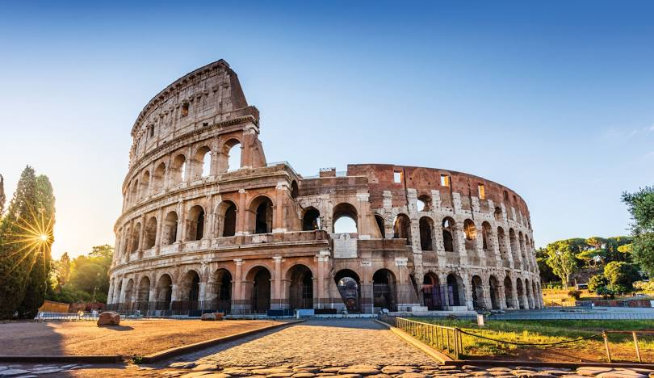
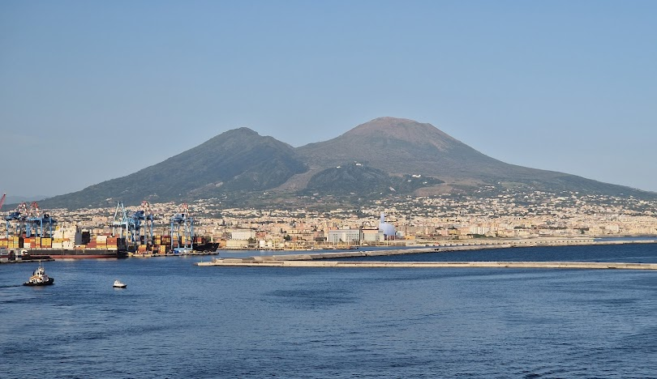
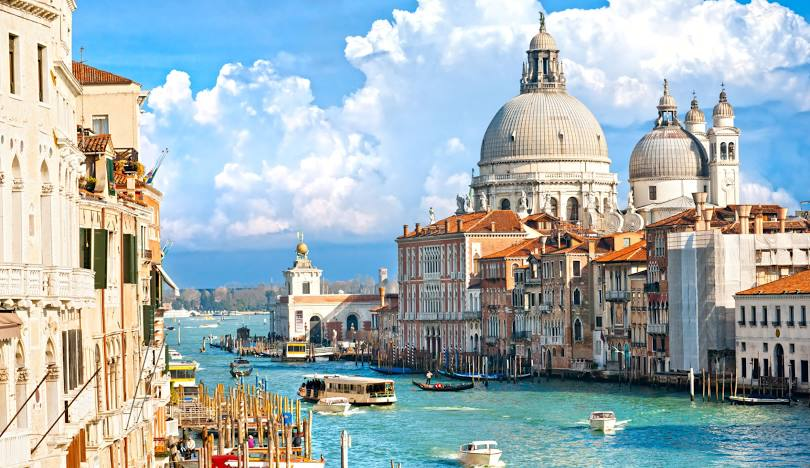
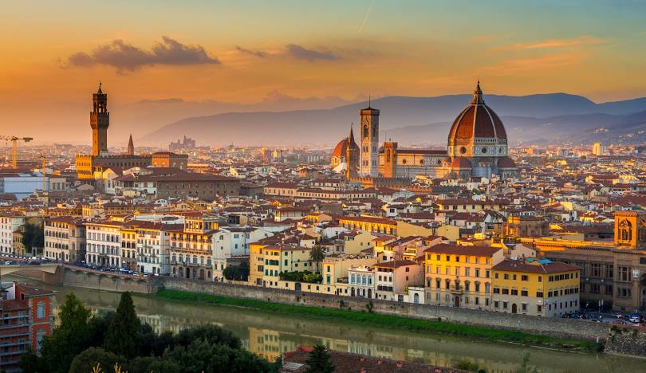

Une richesse culturelle inégalée
L’Italie est un musée à ciel ouvert. De Rome à Florence, en passant par Venise et Naples, chaque ville regorge de trésors historiques et artistiques. Que tu sois passionné
Découvrez la beauté de l'Italie, de ses paysages à sa cuisine.
L’Italie est un musée à ciel ouvert. De Rome à Florence, en passant par Venise et Naples, chaque ville regorge de trésors historiques et artistiques. Que tu sois passionné
Difficile de résister aux charmes de la cuisine italienne. Pizza napolitaine, pasta al dente, risotto crémeux ou encore gelato artisanal… chaque région a ses spécialités. En Italie, manger n’est pas juste un besoin : c’est un art de vivre, à savourer lentement, en terrasse, au soleil.
Avec ses plages ensoleillées, ses lacs rafraîchissants et ses villages perchés, l’Italie offre un cadre parfait pour des vacances estivales. Que tu recherches la détente au bord de la mer Adriatique ou l’aventure dans les Dolomites, le climat chaud et agréable saura combler toutes tes envies.
Les Italiens sont réputés pour leur sens de l’hospitalité. Que tu sois dans un petit village ou une grande ville, tu seras accueilli avec le sourire, un mot gentil, parfois même un espresso offert. Voyager en Italie, c’est aussi faire de belles rencontres et vivre une ambiance conviviale inoubliable.



